Snapshot Finance — 전체 리뷰 리포트
01홈 /dashboard
최상단 KPI, 성과 흐름 차트, 일간/주간 변동, 예금 환산, 수익률 TOP — 모든 영역이 모바일 폭 안에 압축돼 있어 토글 가독성이 가장 큰 이슈.
| # | 시나리오 | 실제값 | 결과 |
|---|---|---|---|
| 1 | KPI 카드 표시 | ₩106,167,103 · ▲19.49% · +₩15,421,599 | ✅ |
| 2 | 기간 토글 (1·3·6·1년·전체) | 3개월 활성 (bg-primary text-primary-foreground) | ✅ |
| 3 | 수익률 ↔ 자산 토글 클릭 전환 | 활성 클래스 정상 전환 | ✅ |
| 4 | "연 3%" 예금 환산 칩 | aria-label="연 3% 예금 환산액" | ✅ |
| 5 | 수익률 TOP 4 종목 표시 | 종목명 일부 잘림 | ⚠️ |
P0 · BUGH-1. 차트 토글 텍스트가 글자 단위로 세로 줄바꿈
whitespace-nowrap + (필요 시) 가로 스크롤 / text-[10px] 자동 축소수익률/자산 + 1개월~전체 두 토글 그룹이 같은 flex row · 각 버튼이 text-[11px] px-2.5 고정, viewport가 좁아지면 단어 자동 줄바꿈P1 · WARNH-2. 수익률 TOP 종목명 트렁케이션
DIREX DAIL SEMI BU 3X ET-USD ← SOXL (실제: DIREXION DAILY SEMICONDUCTOR BULL 3X) PROSHARES ULTRA SEMICONDUCT ← USD ticker (실제: PROSHARES ULTRA SEMICONDUCTORS)
KIS 종목 마스터의 영문명 길이 제한으로 잘린 채 저장됨. → Yahoo Finance 영문명 fallback 또는 stocks.engName 풀네임 컬럼 추가 권장.
P1 · WARNH-3. 토글 버튼 a11y 누락
"수익률/자산", "1개월/…" 토글 버튼에 aria-pressed 또는 role="tab" aria-selected 없음. 보유 페이지의 계좌 탭은 aria-selected가 적용돼 있어 일관성 위해 동일 패턴 권장.
INFOH-4. "기간 변화: +11.15%p" 표기
최근 커밋(4b8ef7a)에서 일간/주간 변동의 %p를 제거했으나, 기간 변화는 그대로 유지 — 수익률 간 포인트 차이라 정확한 표기이지만 다른 영역과 어긋난다는 점은 인지 필요.
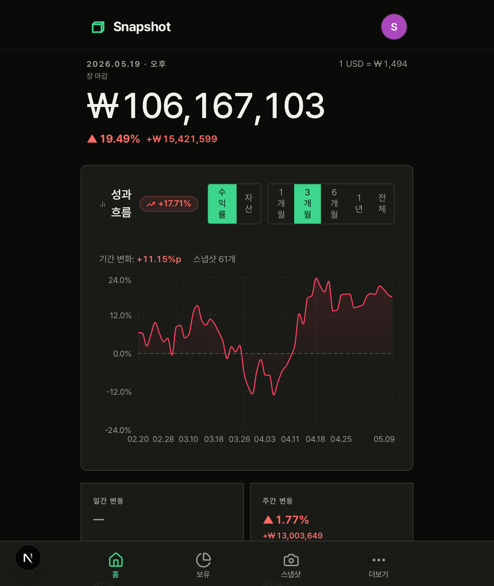
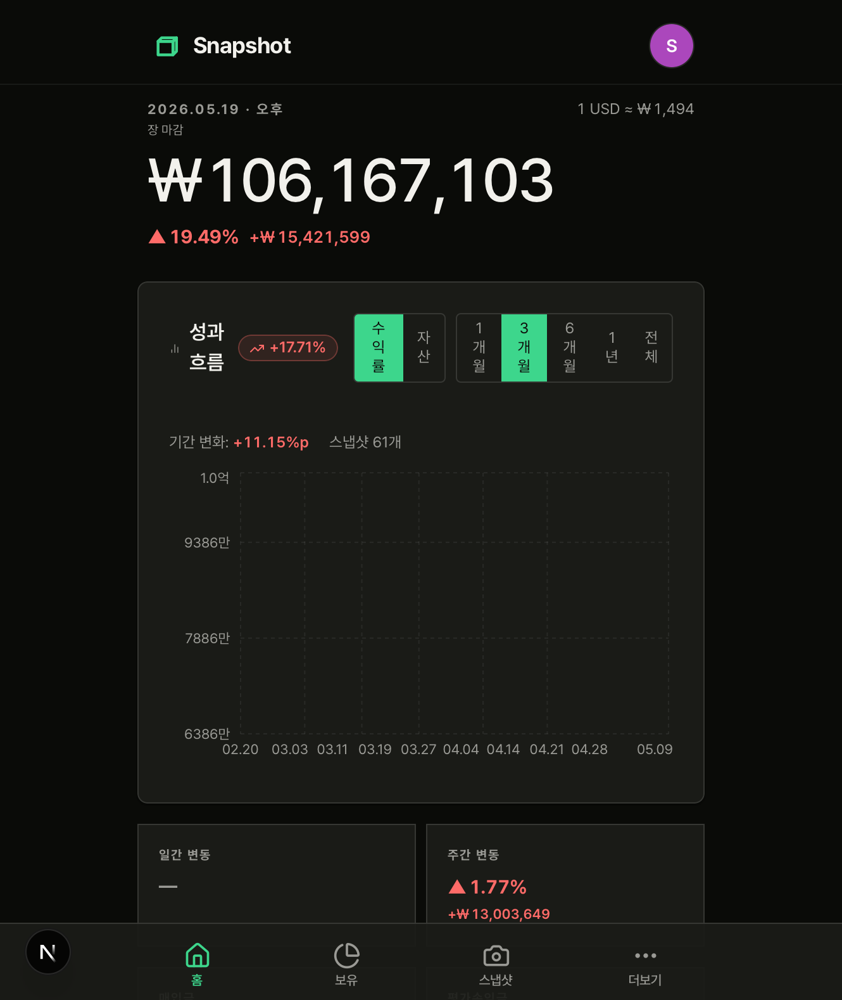
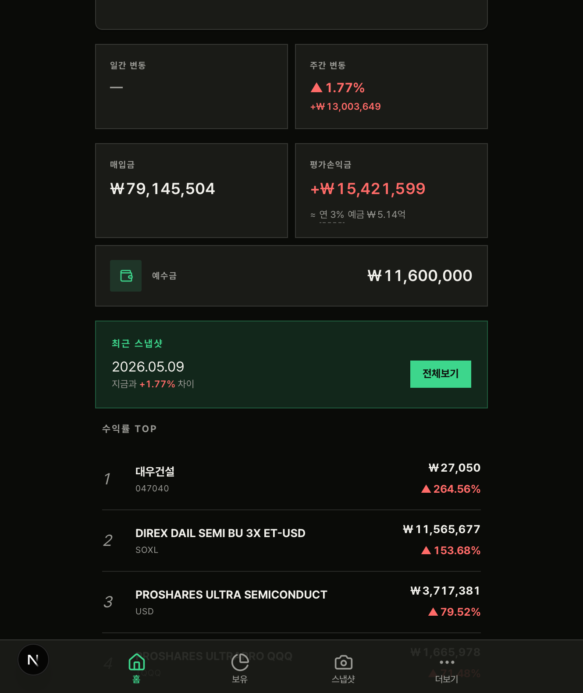
02보유 /dashboard/portfolio
도넛 차트 + 비중 테이블 + 예수금 카드 + 계좌별/통합 토글 + 종목 카드 리스트 + 두 개의 FAB. 최근 종목 추가 기본값 픽스가 정상 동작 확인.
| # | 시나리오 | 실제값 | 결과 |
|---|---|---|---|
| 1 | 도넛 차트 + 비중 테이블 (22 종목) | 색상 매핑 정상 | ✅ |
| 2 | 예수금 카드 + 수정 버튼 | ₩11,600,000 | ✅ |
| 3 | 계좌 탭 a11y | role="tab" aria-selected 정상 | ✅ |
| 4 | "전체" 탭 → 종목 추가 → 기본 계좌 | 기본 계좌 | ✅ |
| 5 | "NH증권" 탭 → 종목 추가 → NH증권 | NH증권 — c8e248b 동작 확인 | ✅ |
| 6 | 종목 추가 Dialog 폭 (모바일) | 다이얼로그 420 / viewport 665 | ✅ |
| 7 | 인라인 검색 결과 스크롤 | scrollHeight 638 / clientHeight 316 | ✅ |
P1 · WARNP-1. 종목 검색 즉시 트리거 부재
"삼성"을 타이핑해도 결과가 즉시 표시되지 않고 Enter 또는 우측 돋보기 버튼을 눌러야 검색 실행. 자동완성 UX와 다르므로 사용자가 "검색이 안 되네?"라 오인할 수 있음.
onChange debounce(300ms) → 즉시 결과 노출P1 · WARNP-2. 정렬 토글 a11y (평가금/매입금/수익금)
현재 정렬 기준이 시각만으로 노출. aria-sort 또는 aria-pressed 추가 필요.
P2 · WARNP-3. FAB 두 개가 종목 카드 일부 가림
우하단에 AI 어시스턴트 + 종목 추가 두 FAB(fixed right-4 z-40 w-12 h-12)가 떠 있어 좁은 폭에서 스크롤 시 종목 카드 수익률/금액과 겹침. 카드 우측 내부 패딩 64px 확보 또는 스크롤 시 자동 숨김 권장.
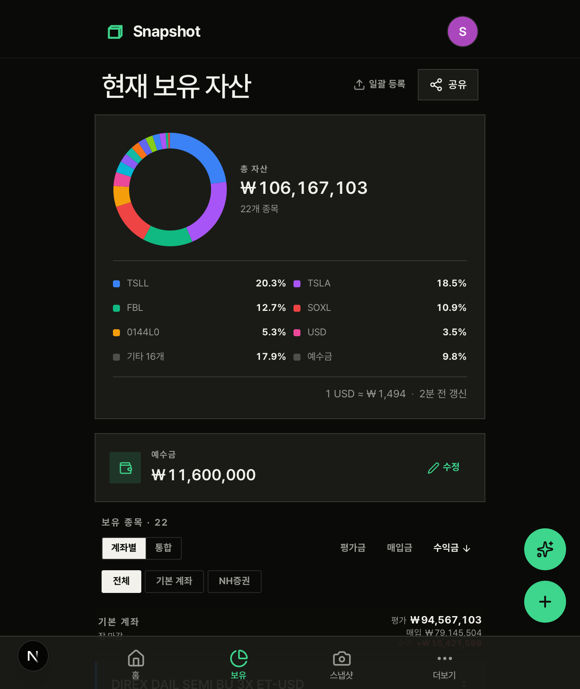
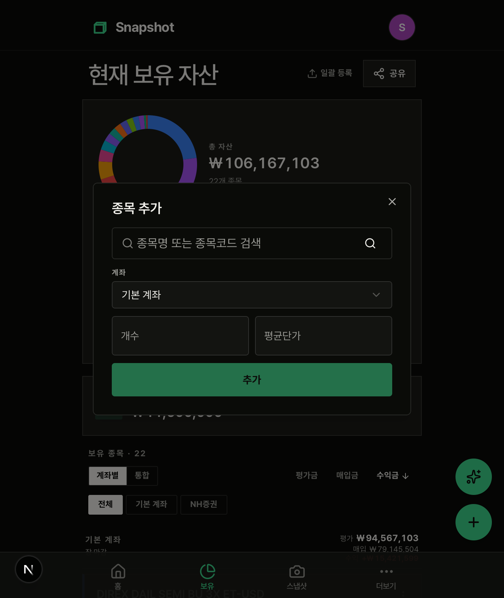
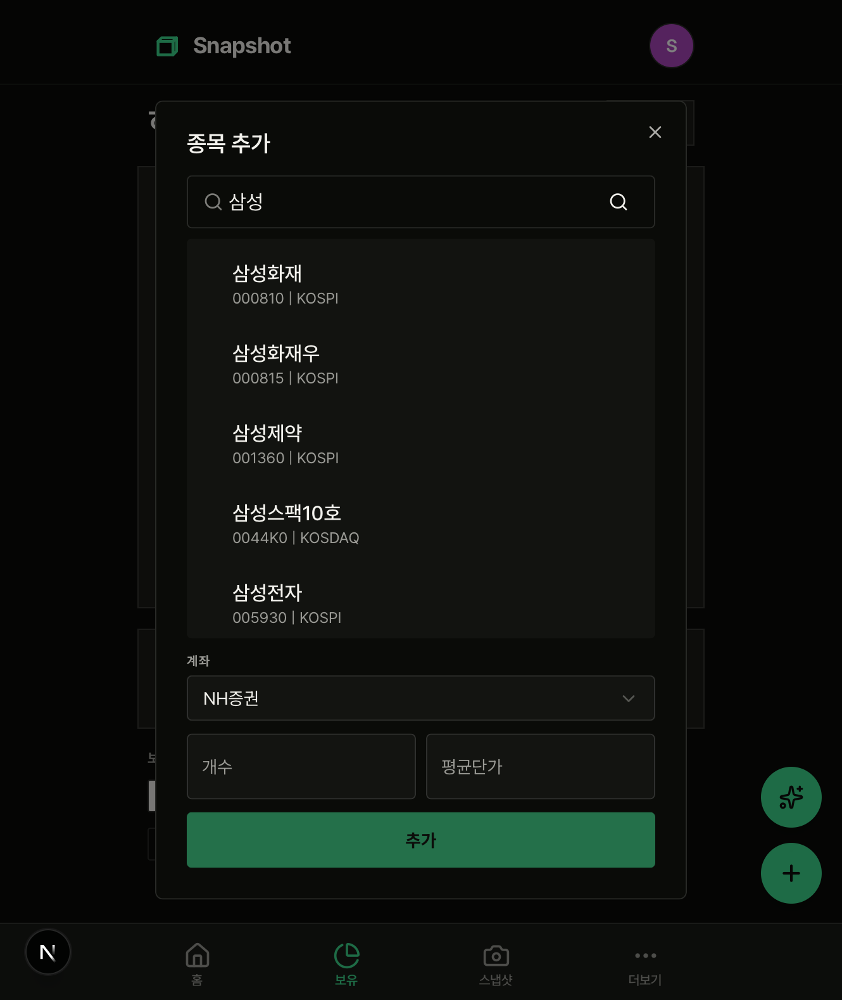
03스냅샷 /dashboard/snapshots · /[id]
LATEST 강조 카드 + 타임라인 + 상세 페이지(MEMO/KPI/HOLDINGS). 자동 스냅샷 메모 텍스트만 톤 정리 필요.
| # | 시나리오 | 실제값 | 결과 |
|---|---|---|---|
| 1 | LATEST 카드 | 2026.05.09 / ₩104,763,454 / ▲17.71% | ✅ |
| 2 | 타임라인 카드 리스트 | 날짜·수익률·자산·비교/상세 노출 | ✅ |
| 3 | 상세 페이지 이동 | /snapshots/[id] 정상 | ✅ |
| 4 | 상세 MEMO 텍스트 | "Auto Snapshot (2026. 5. 8.)" | ⚠️ |
| 5 | HOLDINGS 표 (22 종목) | 정상 노출 (영문명 트렁케이션은 H-2) | ✅ |
P0 · WARNS-1. 자동 스냅샷 MEMO 텍스트 어색함
영문 키워드 + 띄어쓰기 섞인 날짜 — 한국어 UI 톤과 불일치. 같은 텍스트가 시뮬레이션 셀렉트(SI-1)에도 노출돼 단일 포맷터 통일 필요.
AS-IS: "Auto Snapshot (2026. 5. 8.)" TO-BE: "자동 스냅샷 · 2026-05-08" 또는 "자동 (2026.05.08)"
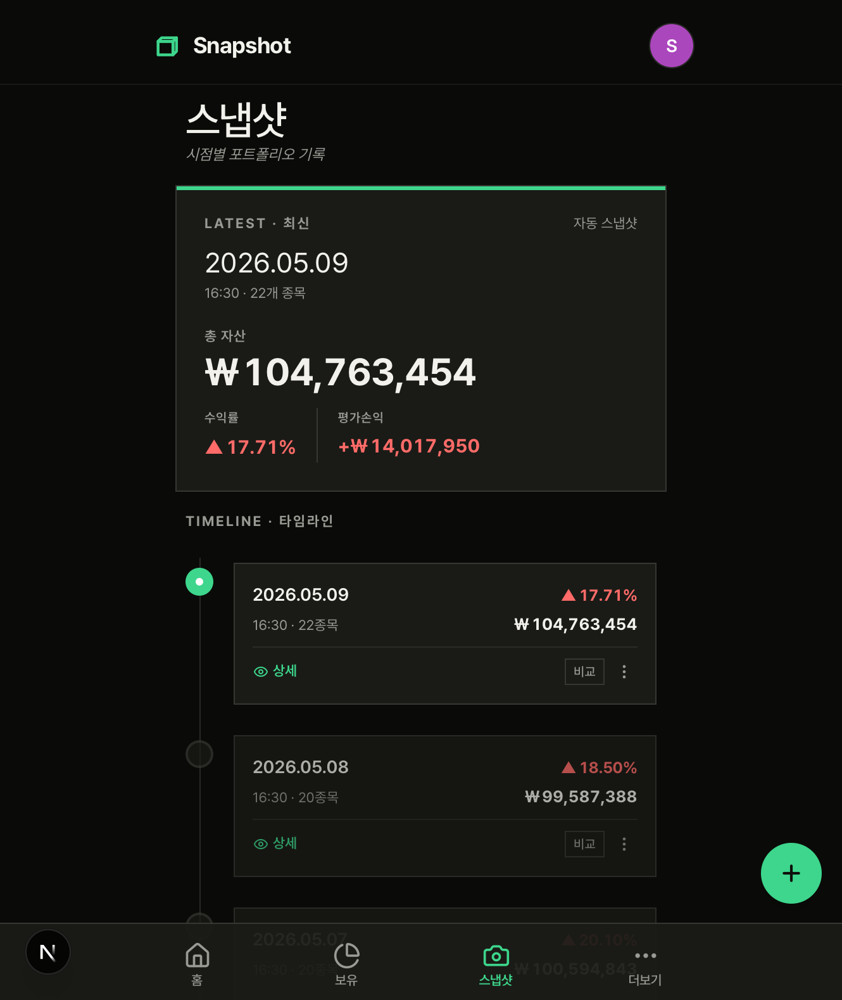
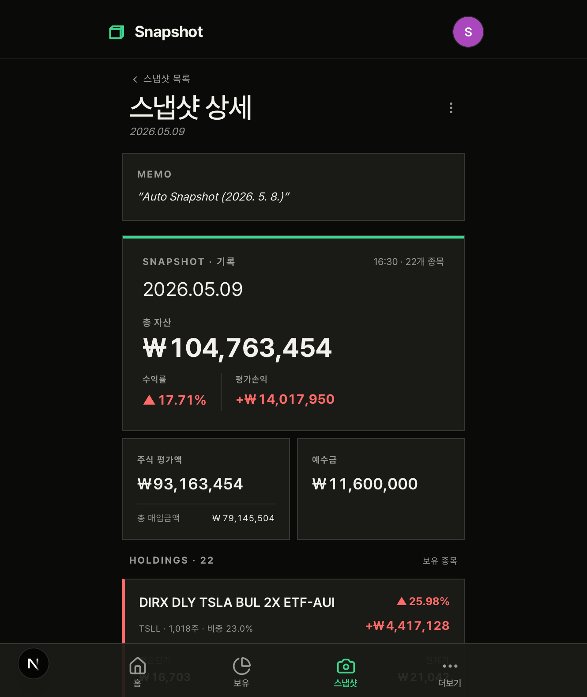
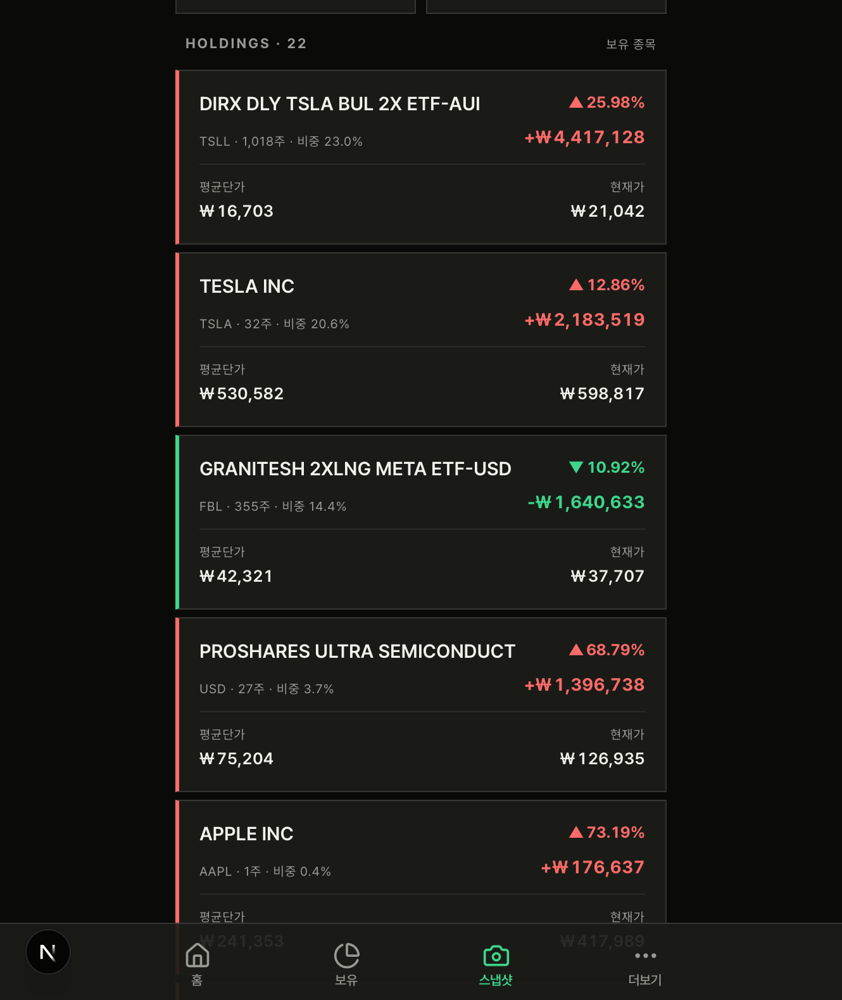
04시뮬레이션 /dashboard/simulation
셀렉트 옵션 라벨이 영문/한글 혼용 + 모호한 날짜로 가장 시급한 톤 정리 대상.
| # | 시나리오 | 실제값 | 결과 |
|---|---|---|---|
| 1 | 헤더 + 안내 문구 | "과거의 포트폴리오를 지금까지 보유했다면 얼마일까요?" | ✅ |
| 2 | STEP 01 카드 | 셀렉트 + 실행 버튼 | ✅ |
| 3 | 셀렉트 옵션 라벨 | 108개 모두 영문/한글 혼용 + 어색한 날짜 | 🐛 |
P0 · BUGSI-1. 셀렉트 옵션 라벨 톤 불일치
AS-IS: 2026-05-09 16:30 | Auto Snapshot (2026. 5. 8.) (총 ₩104,763,454) 2026-05-08 16:30 | Auto Snapshot (2026. 5. 7.) (총 ₩99,587,388) TO-BE: 2026-05-09 16:30 · 자동 · 총 ₩104,763,454 2026-05-08 16:30 · 자동 · 총 ₩99,587,388
- 영문 "Auto Snapshot" 노출 → 한국어 UI 톤과 불일치
- 메모의 날짜
2026. 5. 8.와 스냅샷 일시2026-05-09동시 표시 → 어느 시점인지 모호 - S-1과 동일 포맷터 사용 → 한 곳만 고치면 양쪽 해결
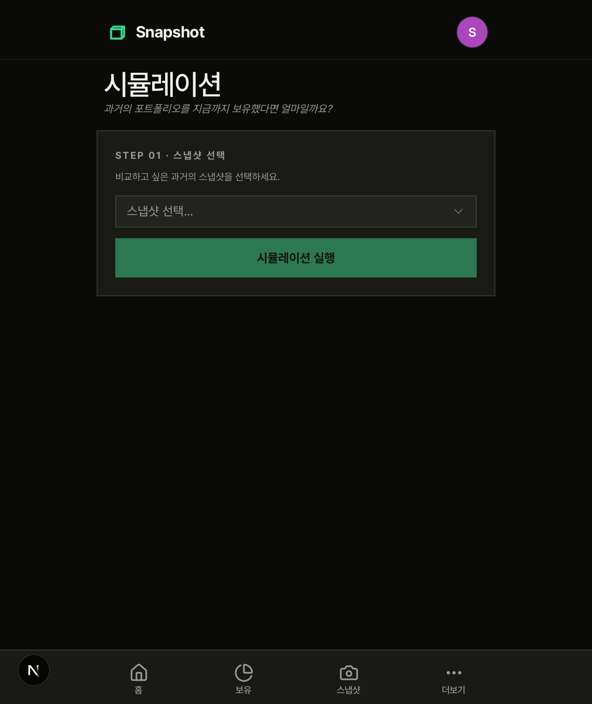

05계좌 관리 /dashboard/accounts
드래그 정렬·편집·삭제 — UI 자체는 깔끔하고 일관됨.
| # | 시나리오 | 실제값 | 결과 |
|---|---|---|---|
| 1 | 계좌 목록 | 기본 계좌 22개 / NH증권 0개 | ✅ |
| 2 | 드래그 핸들 + 편집(연필) + 삭제(휴지통) | 모두 노출 | ✅ |
| 3 | "드래그하여 순서를 바꿀 수 있습니다." 안내 | 표시 정상 | ✅ |
| 4 | "+ 새 계좌 추가" 풀폭 버튼 | 디자인 톤 정렬 | ✅ |
INFO종목 수 표기 일관성
계좌 페이지: 종목 수: 22개 · 보유 페이지: · 22 — 표기 통일하면 일관성 향상.
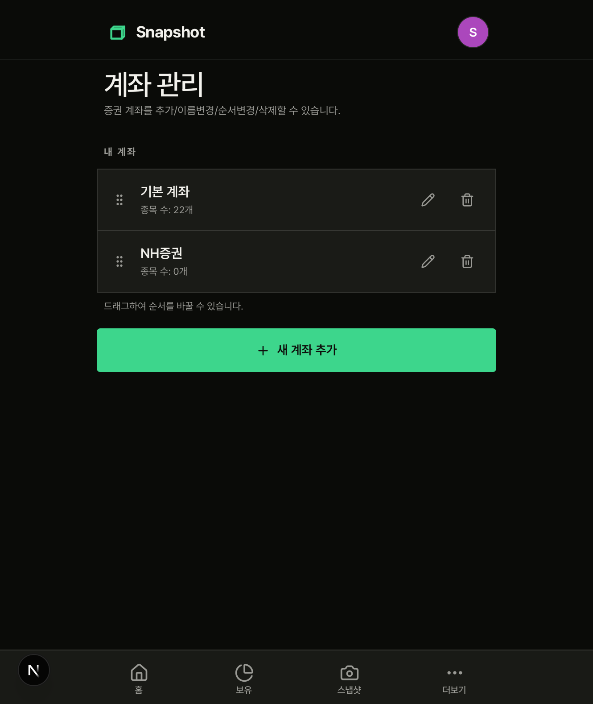
06설정 /dashboard/settings
테마/언어/자동 스냅샷 토글, 위험 동작(회원 탈퇴) 색상 구분도 적절.
| # | 시나리오 | 실제값 | 결과 |
|---|---|---|---|
| 1 | 프로필 카드 | spungs · s83286263@gmail.com | ✅ |
| 2 | 테마 (Light/Dark) | Dark 활성 | ✅ |
| 3 | 언어 (한국어/EN) | 한국어 활성 | ✅ |
| 4 | 자동 스냅샷 토글 | ON | ✅ |
| 5 | 로그아웃 / 회원 탈퇴(빨강) | 위험 색상 구분 적절 | ✅ |
| 6 | 이용약관 / 개인정보처리방침 | 링크 정상 | ✅ |
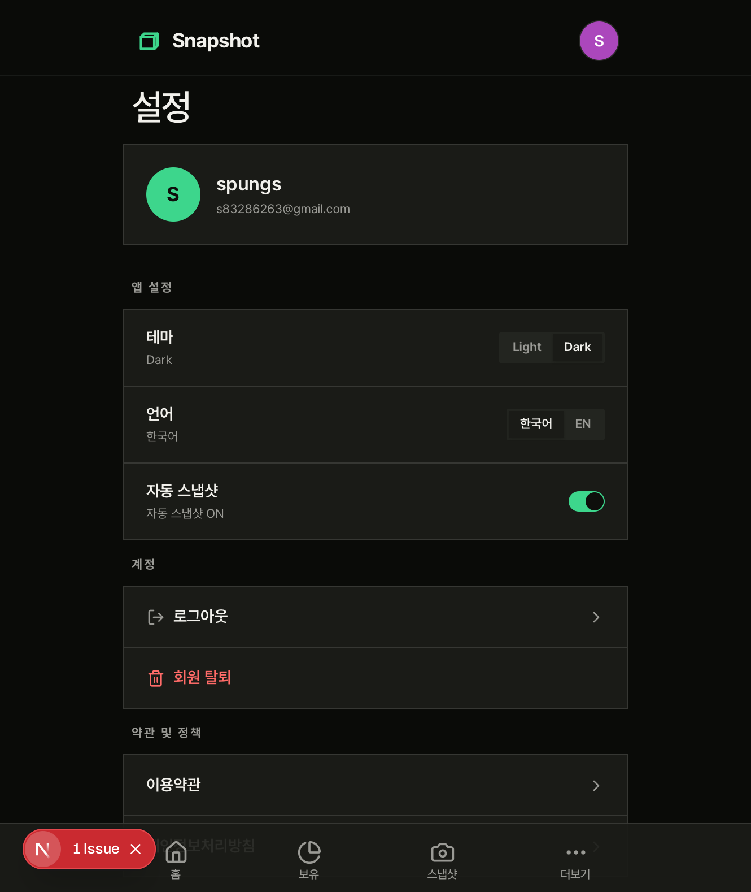
07더보기 /dashboard/more
도구·계정 그룹화는 깔끔하나, 두 시뮬레이션 도구 차별화는 약함.
| 영역 | 항목 | 결과 |
|---|---|---|
| 도구 | 시뮬레이션 — 과거 스냅샷을 지금까지 보유했다면 | ✅ |
| 도구 | 만약에 — 과거 이 시점에 샀더라면 | ✅ |
| 계정 | 계좌 관리 · 설정 | ✅ |
P2 · WARNM-1. "시뮬레이션" vs "만약에" 차이 모호
기능 차이는 분명하나 라벨/설명만으론 사용자가 처음에 헷갈릴 수 있음.
- 대안 1: "스냅샷 유지 시뮬레이션" / "대체 매수 시뮬레이션"
- 대안 2: 아이콘 차별화 + 한 줄 예시 ("예: TQQQ 100주 더 샀더라면" / "예: 작년 1월 그대로 보유했다면")
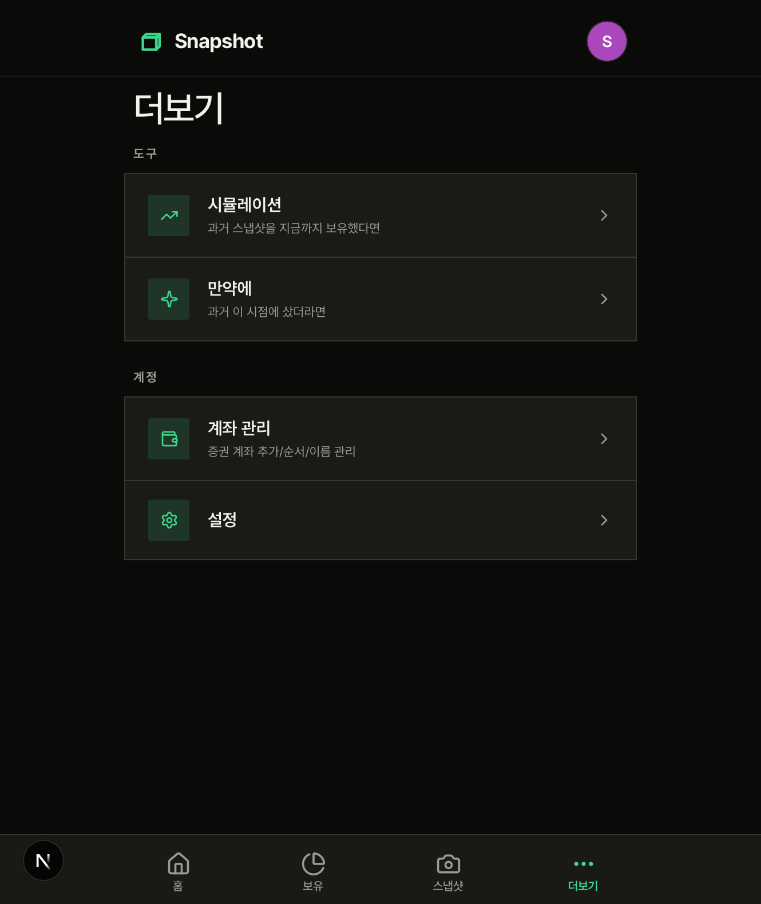
08AI 어시스턴트 (FAB)
자연어 종목 관리 다이얼로그. 진입 시 가능/불가 범위 명시가 명확.
| # | 시나리오 | 실제값 | 결과 |
|---|---|---|---|
| 1 | 보유 페이지 FAB | aria-label="AI 어시스턴트 열기" | ✅ |
| 2 | 다이얼로그 헤더 + 설명 | "자연어로 종목을 추가·수정·삭제할 수 있는 AI 어시스턴트" | ✅ |
| 3 | 예시 4개 | "NH에 삼성전자 100주 75000원 추가" 등 | ✅ |
| 4 | 가능/불가 범위 명시 | 예수금→홈 / 계좌 관리→설정 / 스냅샷→스냅샷 메뉴 | ✅ |
| 5 | USD 환율 입력 (cfa6720) | 진입 직후엔 미노출 — 종목 추가/수정 시점에 노출 추정 | 📝 |
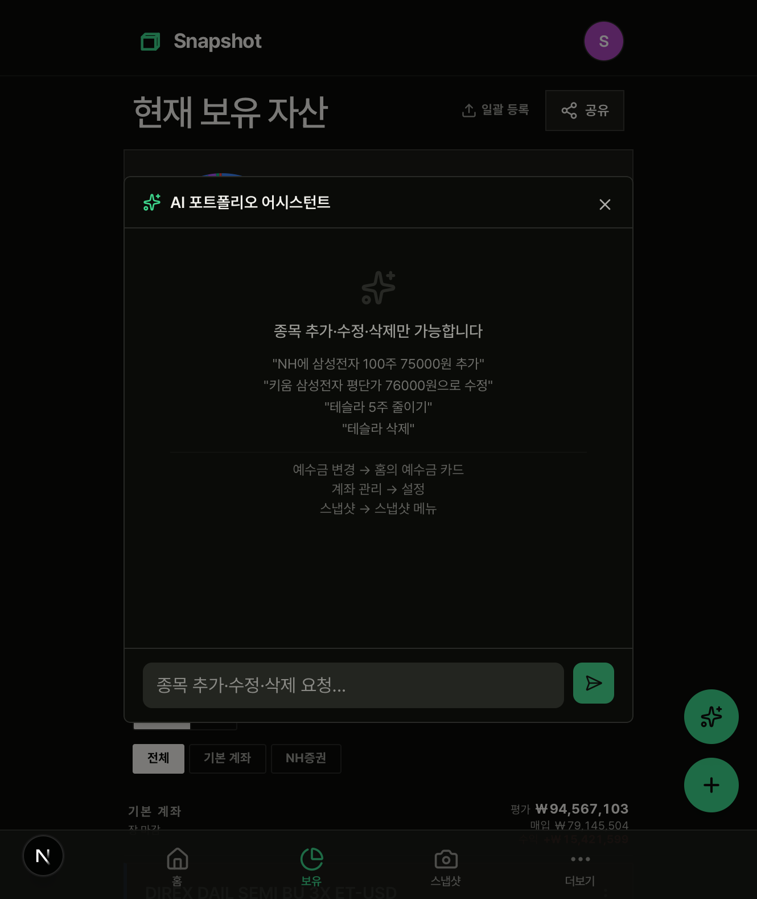
09전역 — 콘솔/네트워크/접근성
P2 · WARNG-1. Google Sign-In 경고
[GSI_LOGGER]: Relative login_uri was provided. Use absolute url instead. Relative login_uri may be considered invalid in the future.
Next dev 오버레이에 "1 Issue" 인디케이터로 노출됨. google-signin 설정의 login_uri → 절대 URL 교체 권장.
P2 · WARNG-2. Next 16 deprecation
The "middleware" file convention is deprecated. Please use "proxy" instead.
다음 Next 메이저에서 동작 불가 가능. middleware.ts → proxy.ts 마이그레이션 일정 필요.
INFOG-3. 검증 환경 한계
- cmux 브라우저(WKWebView)는
viewport명령 미지원 → 데스크탑 폭(md:max-w-2xl) 검증은 별도 Chrome/Safari 환경에서 확인 필요 - 최근 픽스(데스크탑 Popover 검색 결과 스크롤 db3f367, 2e64361)는 모바일 폭 검증만 완료
- 리뷰 중 다른 세션이 3000 포트 점유 → 3001로 dev 서버 재기동하여 진행
10권장 우선순위
aria-pressed / aria-selected)login_uri 절대 URLmiddleware → proxy 마이그레이션 (Next 17 대비)11스크린샷 인덱스